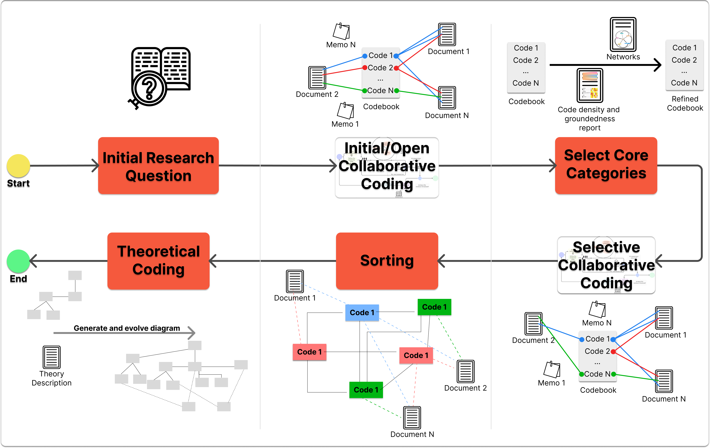

Public Repository for the research "Harmonizing DevOps Taxonomies: A Grounded Theory Study"
Methodology
We applied a novel GT process that extends the Charmaz's GT variant to allow multiple researchers to participate in the coding process, that is, collaborative coding. This GT process ensures consensus on the constructs that support the theory, thus improving the rigor of qualitative research (cf. here). To this end, we analyze the intercoder agreement (ICA) to measure the extent to which different raters assign the same precise value (code or category) for each item rated (qualitative data item or quotations).
This process (cf. here for a full description) involves multiple rounds of coding, constant comparison, and memoing (see Figure 1), specifically one round per coder involved in the collaborative coding. The process starts with Data Collection to be analyzed and with Define the Coder Order. The first coder analyzes the selected documents, line by line, extracting quotations (segments of texts) and assigning codes to these quotations. During this process, the coders also write notes that are relevant to the research. We call this memos. At the end of this analysis, the coder will create memos, a codebook, quotations, and the relation between the codes and quotations (i.e., the codes assigned to each quotation). The following coders analyze the same documents which the previous coder analyzes. These quotations are visible, therefore, the coders never see the codes assigned to each quotation. They have access to the codebook and the documents with the quotations. Then, subsequent coders can create or improve the quotations, codes, and memos if necessary. Once all coders have analyzed and coded the documents, the following step is calculate the ICA, see activity Calculate ICA in Figure 1. ICA helps and guides the Group Discussion to identify mistakes, coding disagreements, and weaknesses in the categories improving the codebook and code descriptions. All decisions are documented in the Disagreement Diary document. Suppose the ICA results exceeded a threshold, then Proceed to Next Stage. If not, execute the Group Discussion and start another interaction until reach the minimum threshold defined.

The GT process is composed by the following stages: initial/open coding, selection of core categories, selective coding, sorting, theoretical coding, and theory writing (see Figure 2). The outputs of these phases are the coding, the memos, the categories, and the resulting theory, all managed through the tool Atlas.ti v9.
Open Coding
Selection of Core Categories
Selective Coding
Sorting
Authors

Carla Rocha
Isaque Alves
Jessica Díaz
Jorge Pérez
Questions & Comments
Please contact yesica.diaz(AT)upm.es in case of questions.
License and Software Information © Universidad Politécnica de Madrid (UPM), Spain © Universidade de São Paulo (USP), Brazil
UPM & USP publishes this documentation subject to the terms of the Creative Commons Attribution-NonCommercial-ShareAlike 4.0 International Public License with the aim of helping the community with our knowledge which we think can be also useful for other people. You will find a copy of the CC BY-NC-SA license in the root folder of this package. All rights not explicitly granted to you under the CC BY-NC-SA license remain the sole and exclusive property of UPM.